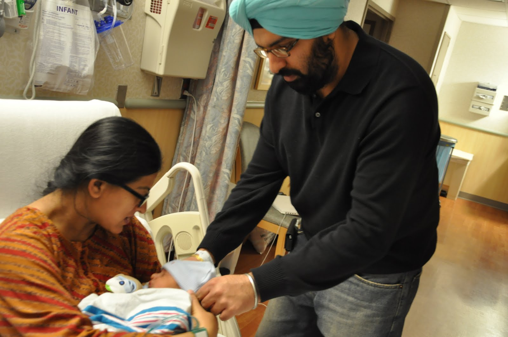
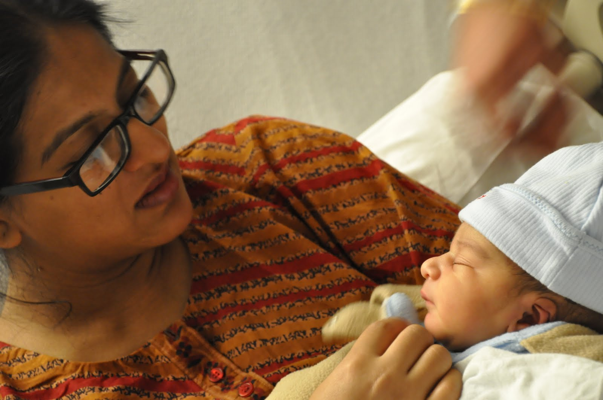
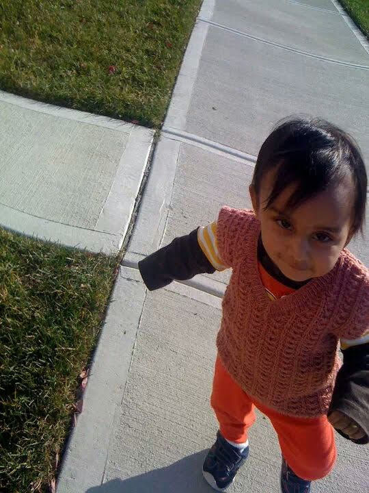
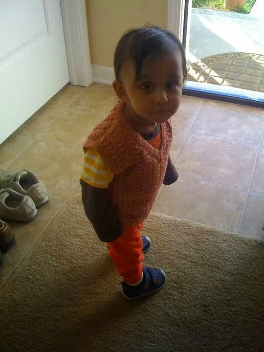

Episode 1
It was fall of 2009. As per doctor's prediction Manraj's baby boy was due in the last week of October. Nani after meeting Aman in Jersey landed Colombus Ohio on 11th of Oct, which was Ajit's birthday too. Both Manraj and Ajit were on the airport to receive Nani. Manraj ate poorely and was little low in energy. Nani took charge to see that she eats well and have proper walk and excercise. Due date crossed and doctor's check up revealed that baby is in perfect health but might take few more days to meet us all.
3rd November late evening Manraj was taken to the hospital. Early in the morning on 4th Nov, we heard cry of our little boy. Nurse wrapped our little prince in a shawl Nani brought as babaji's blessings from Hazoor Sahib Gurudwara. After meeting his Mumma and Papa when 20 minutes old Ridam came to Nani's hands, he opened his eyes, looked sharply at her as if trying to recognise her. It was an exceptional and strange experience for Nani because being a teacher she handled children for the last 2 decades but never had experience to be stared so sharply as it was today. She thanked god for blessing her with an intelligent and sharp grand child. She alerted Manraj also to be on her toes as she has been blessed with an intelligent child.
Episode 2
November 2010: Ridam was turning one. Manraj had to take her candidacy examination in the first week of November itself. It was a week long assignment and a viva voca there upon. Nani travelled from India to US to take care of little Ridam so that Mumma could write her exam without any anxiety.
Ridam was not only firmly footed by this time but could walk and run all around. Nani landed at Detroit airport where Ajit, Manraj, Ridam and Aman were present to receive her. It was a sigh of relief for her to see that Ridam immediately recognised her and became friendly with her. Reaching Columbus Nani and Ridam got along well. Nani took him out for a stroll and enjoyed playing with him . Manraj went to Library to write her test and Ajit to his office. Nani never left Ridam alone as he was a small child and didn't know about his safety.
One day Nani was in the kitchen and Ridam was no where to be seen. Nani searched him every where, loudly called him many times but didn't get any response. She was on the verge of crying when she saw Ridam coming out from the laundry room (Ohio house had a separate laundry room with washer and dryer installed and a shelf above to keep detergents etc.). When Nani confronted Ridam that what he was doing there and why didn't he reply on Nani's calling... Ridam looked little scared but tried to divert Nani's attention by speaking out monosyllables like arrrrrrr. Later Nani talked to Manraj and she cleared the suspense. She told Nani that Ridam was not allowed to eat Halloween candies and Manraj kept a packet of those candies in the laundry Room. Poor boy was in search of those candies which were at a a height and out of his reach.
